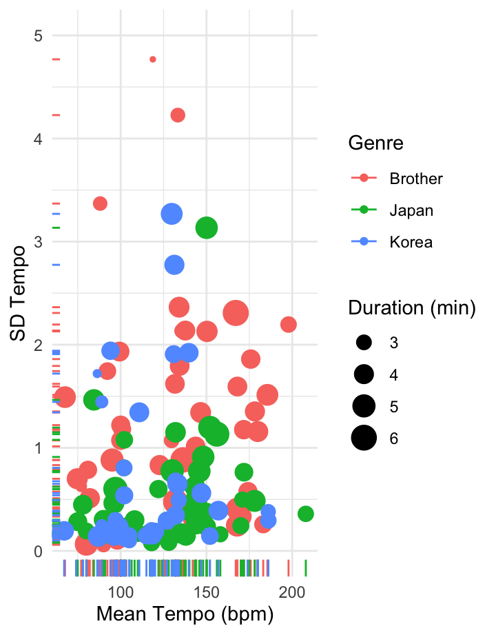
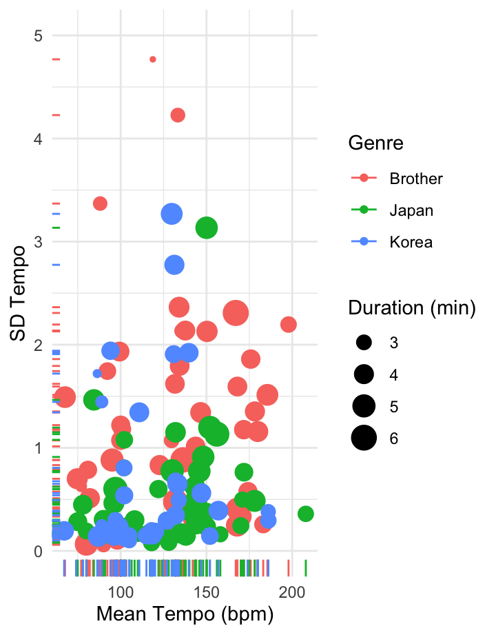
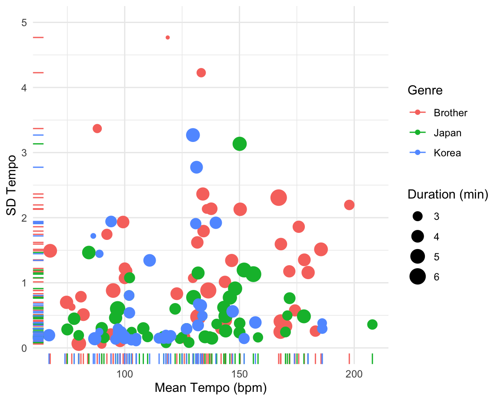
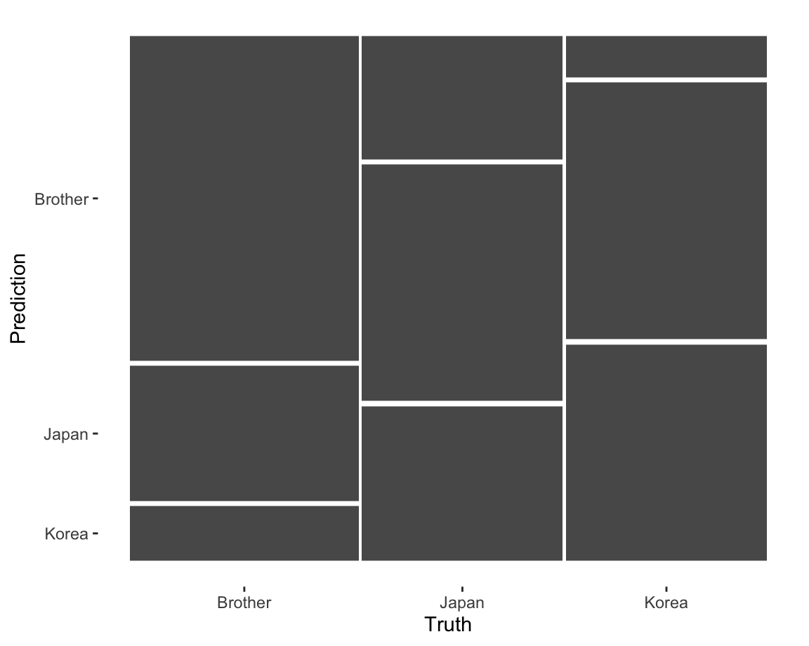

Beginning of the story
Welcome to my portfolio!
What is this about?
Music has always been an important medium for expressing emotions, especially when it comes to matters of the heart. Romantic songs, in particular, have a way of capturing the essence of love and heartbreak in a way that resonates with people across cultures.
In this project, we aim to explore the question of who is more romantic - Japanese or Korean artists? To do this, we will be analyzing a playlist of 52 sad love songs compiled by an avid Spotify user and self-proclaimed romantic, my brother.
Using R and various visualization tools, we will delve into the playlist to gain insights into the different themes and styles of music represented by the Japanese and Korean artists. Of course, being romantic is a subjective concept, but we will be using my brothers taste in music as a benchmark for our analysis.
Ultimately, our goal is to uncover any patterns or trends in the playlist that might shed light on the question of which culture produces more romantic music. So lets put on our headphones, dive into the playlist, and see what the data has to say!

DALLE 2 generating input asian melancholic songs thatgive you sad feeling
Description
About My
There are three playlists chosen for my project in order to answer my question.
My Brothers playlist
The playlist is named after a Japanese word, (Setsunai-kei) meaning melancholic or wistful in English. The 57-song playlist is a collection of songs that convey bittersweet sentiments through sweet vocals assisted by soft and warm instrumentals. The playlist is primarily composed of songs sung in Japanese or Korean but also includes English songs. Despite the difference in language amongst the songs included, they share the similarity in the melodies of the songs, often having sweet and charming rings. The vocals of the songs are also one of the main elements that make the playlist truly melancholic, as if the artists are whispering to the heart of the listener.
Top 50 South Korea & Top 50 Japan
To determine which culture produces more romantic music, I have decided to use my brothers playlist of 52 sad love songs from Korea and Japan as a standard for comparison. In order to assess the relative romanticism of Korean and Japanese music, I will be comparing my brothers playlist with the Top 50 playlists from each country.
By examining the degree of overlap between my brothers playlist and the Top 50 playlists from Korea and Japan, I hope to gain insights into which countrys music is more aligned with my brothers taste in romantic music. While its important to note that my brothers playlist is not necessarily representative of all Korean and Japanese romantic music, it does provide a useful benchmark for comparison.
Of course, romanticism is a subjective concept and there may be other factors beyond just cultural origin that influence my brothers selection of songs. Nonetheless, I believe that this approach will provide a useful starting point for exploring the question of which countrys music is more romantic.
What makes a song romantic and sad?
Explain in academical term what we consider as our target songs.
Visual analysis of my
Song length in Bar plot

Upon examining my brothers playlist and the Top 50 playlists from Japan and South Korea, Ive noticed that there are some interesting differences in the duration of songs. Specifically, my brothers playlist consists mostly of songs around 4 minutes in length, while the Top 50 playlist from Japan has a peak at 3 minutes and a little over 4 minutes, and the Top 50 playlist from Korea peaks at 3 minutes.
Keys of Songs

As I continue to analyze my brothers playlist and the Top 50 playlists from Japan and South Korea, Ive noticed some intriguing differences in the musical keys used by the different artists.
Specifically, my brothers playlist has a notable concentration of songs in the A key. Additionally, he has an equal amount of songs in the C, C#, and D keys. In contrast, the Top 50 playlist from Japan has the highest concentration of songs in the G key, while the Top 50 playlist from Korea mainly features songs in the C and C# keys - which is consistent with the key distribution in my brothers playlist.
While the key of a song may not directly determine its level of romanticism, these observations are an interesting starting point.
Tempo & Valence
As I continue to explore the romantic qualities of music from Japan and South Korea, Ive identified two key features from Spotify API that may be particularly relevant: tempo and valence.
When examining my brothers playlist, which he curated as a collection of sad love songs, I noticed a preponderance of songs with lower tempo and valence scores. This aligns with his stated intention for the playlist and suggests that these features may be indicative of romantic music as he perceives it.
In contrast, the Top 50 playlists from Japan and South Korea exhibit a similar distribution of valence scores, centering around 0.50 and 0.75. This may reflect the similarity of popular music trends between the two countries, particularly in the realm of pop music.
However, I did observe a slightly greater prevalence of songs with low tempo and valence scores in the Top 50 playlist from South Korea than in the Top 50 playlist from Japan. Based on this observation, its possible that South Korean music may be somewhat more romantic than Japanese music. However, its important to note that this conclusion is based on a limited set of data and further analysis would be needed to confirm it.
Chromagram
We are analyzing the song All Alone by DAY6 using the function get_tidy_audio_analysis(). The chromagram were working with has been normalized and were using the Euclidean distance measure. A chromagram in computational musicology is a visual representation of the distribution of energy across different musical pitches in an audio signal. You can thus see which key is prevalent in each time frame. You can see that in the beginning of the song, strong keys shift continuously beginning from C, F3, B, A and then D. After 53 second time mark A key shows to be the most important key of the song.
TIP: Implement two more songs. Explain more on the differences between different distance measures.
Ceptogram

A cepstrogram is a visual representation of the cepstral coefficients of an audio signal. Cepstral analysis is a technique used in signal processing and acoustics to analyze the spectral content of a signal by taking the inverse Fourier transform of its logarithm. In a cepstrogram, the cepstral coefficients are displayed over time, It can reveal patterns and structures in the spectral content of the signal. I made a ceptogram of the song As I Wished by Urban Zakapa. I used Euclidean for normalization and root mean square as a summary statistic. We can see that lower c are appear to be more dominant. (I need a better explanation here because I am not so sure what this represents.)
Self Similarity Matrix
The two self-similarity matrices show chroma- and timbre-based self-similarity of the song Here I Am Again by Yerin Baek. I was sick and I dont really know what to say. I will work on this explanation by 15th of March. But I can say that since there are no diagonal lines there are not much similar time components within the song. The song had different type of melody throughout the song but I think the overall vibe was similar so that is so strange. I also see that there is not much a clear pattern that is coming back and forth, this is also a strange phenomenon in my opinion. I need to research on this.
Outliers and its keygrams

In my brothers playlist there are also western songs such as I Will Always Love You by Dolly Parton. In this section I will focus on this song by making a chordgram. The song is in D major but the plot shows otherwise. It depicts keys above D major. So this is strange.
Another example is i swear ill never leave again by Keshi. The song is A major but it also fails to detect that. It shows Eb major is the most prevalent.
In both cases, it failed to highlight the correct chords. It highlights somewhere close but it is not accurate. (I need some explanation why this is the case in the future)
Track-Level Summaries

Overall I can see that my brothers playlist has higher SD tempo value than the other two playlists. But this is probably due to the fact that my brothers playlist is smaller than the the other two.
Histogram of Tempi
Here is a histogram of tempo of each playlists. As you can see, there is no clear similarities between these three playlists. Each playlist has different distribution in tempo. However, at just below 100 bpm both my brothers playlist and Top 50 Korea have a peak whereas Japan top 50 doesnt. This indicates that Brothers playlist is more similar to Korean than Japanese in terms of tempo.
Tempogram
Over My Dead Body by Drake has the highest tempo in my brothers playlist. Although listening to it the background instrumental is not particularly faster than other songs. However, it is suspected that rap is effecting the overall tempo of the song. I used windows size of 4 and hop size of 1 in this tempogram. We see that the bpm is mostly constant which aligns with how the song also goes. However, BPM of this song should be around 185. This is not correctly shown in the plot and I called this plot multiple times but it gave me the same result. Compared to its self-similarity matrix curve you can see that both
Classification

Here we see a classification matrix of my KNN classifier. This matrix represents the accurately predicted values. We see that the classifier predicts my brothers playlist well as it makes up the largest area. It does less so in other areas. I changed the k value to 3 and it had no significant effect. Overall the accuracy of this classifier is below average.
End point
What did I find?
Through our analysis of my brothers playlist and the Top 50 playlists from Japan and South Korea, weve discovered some interesting differences in the musical features that are commonly associated with romantic music.
We found that the Top 50 playlists from both countries generally exhibited a similar distribution of tempo and valence scores, reflecting similarities in pop music trends. However, the playlists diverged in other areas: the Top 50 playlist from Japan featured a higher concentration of songs in the G key and a wider range of song lengths, while the Top 50 playlist from South Korea had many songs in C and C# keys and tended to peak at 3 minutes in length.
Based on our analysis, we observed that South Korean music appears to more closely resemble my brothers playlist than Japanese music. While this is a somewhat subjective conclusion, given that it is based on my brothers personal tastes and preferences, it suggests that Koreans may be more romantic than the Japanese in his estimation.
Overall, these findings offer insights into the cultural differences in romantic music between Japan and South Korea, and may be useful for those interested in exploring these themes further or curating playlists in this genre. However, its important to note that our conclusions are based on a relatively small sample size, and further analysis would be needed to confirm these trends.
Future Improvements
Find better playlists. The results were much better when I picked romantic song playlists of South Korea and Japan instead of top 50. The problem is that they were not curated/created by Spotify.
Use/explore more features and maybe I can calculate similarities using KNN?